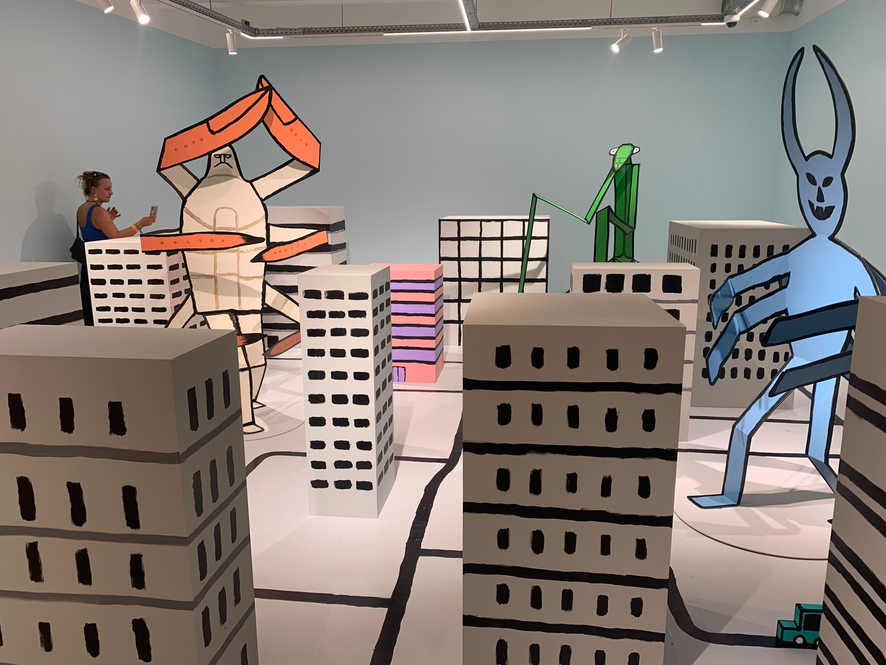
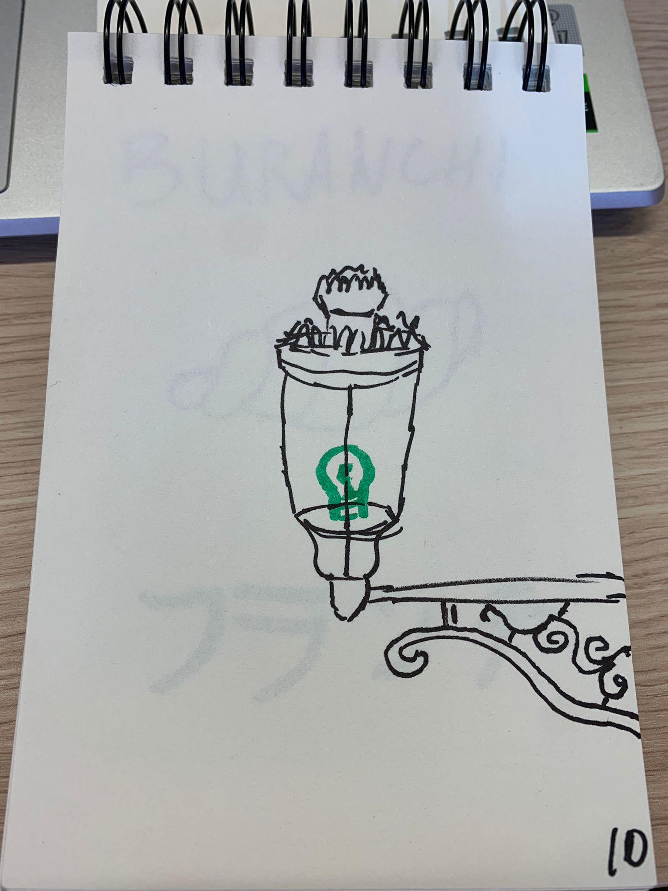
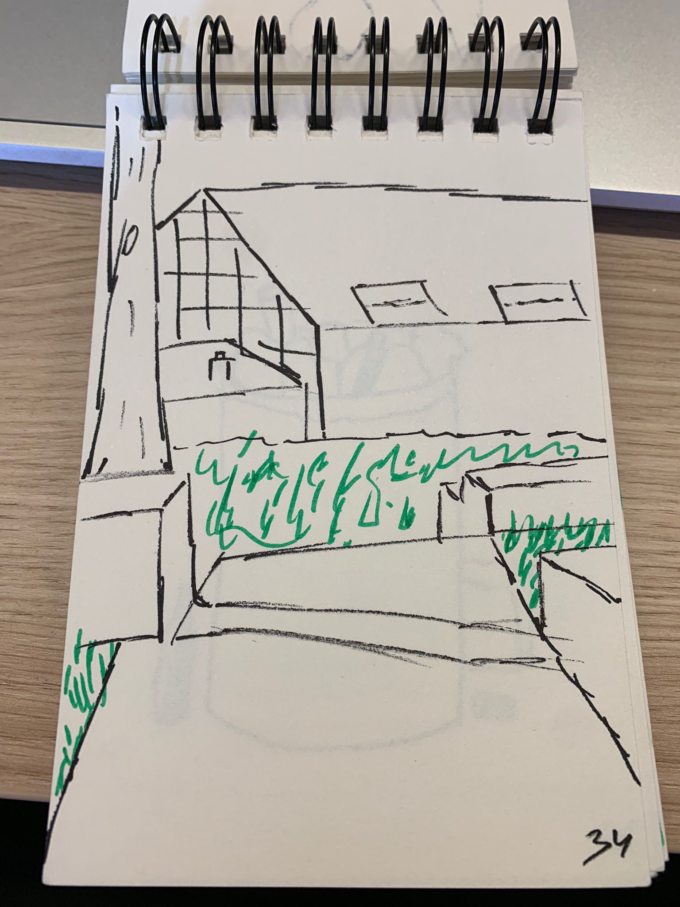
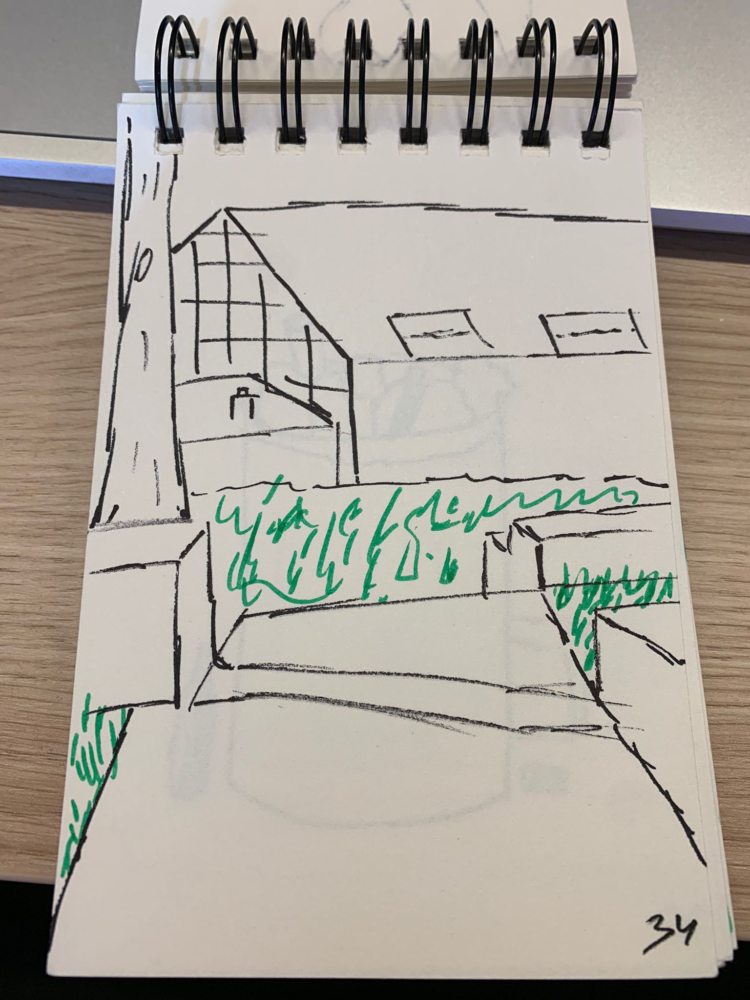

Brussel
- Beschrijving
Aan het begin van de minor zijn we drie dagen naar Brussel geweest. Dit was een erg leuke manier om kennis te maken met klasgenoten en docenten. Tijdens deze trip hadden we ook nog een opdracht, namelijk 100(!) schetsen maken van... alles.
Tekenen is nou helemaal niet mijn ding dus dit was voor mij nog een aardige taak. Toch heb ik er mijn best op gedaan en een paar van de schetsen vond ik uiteindelijk zelfs best goed gelukt.
Afbeeldingen
 
